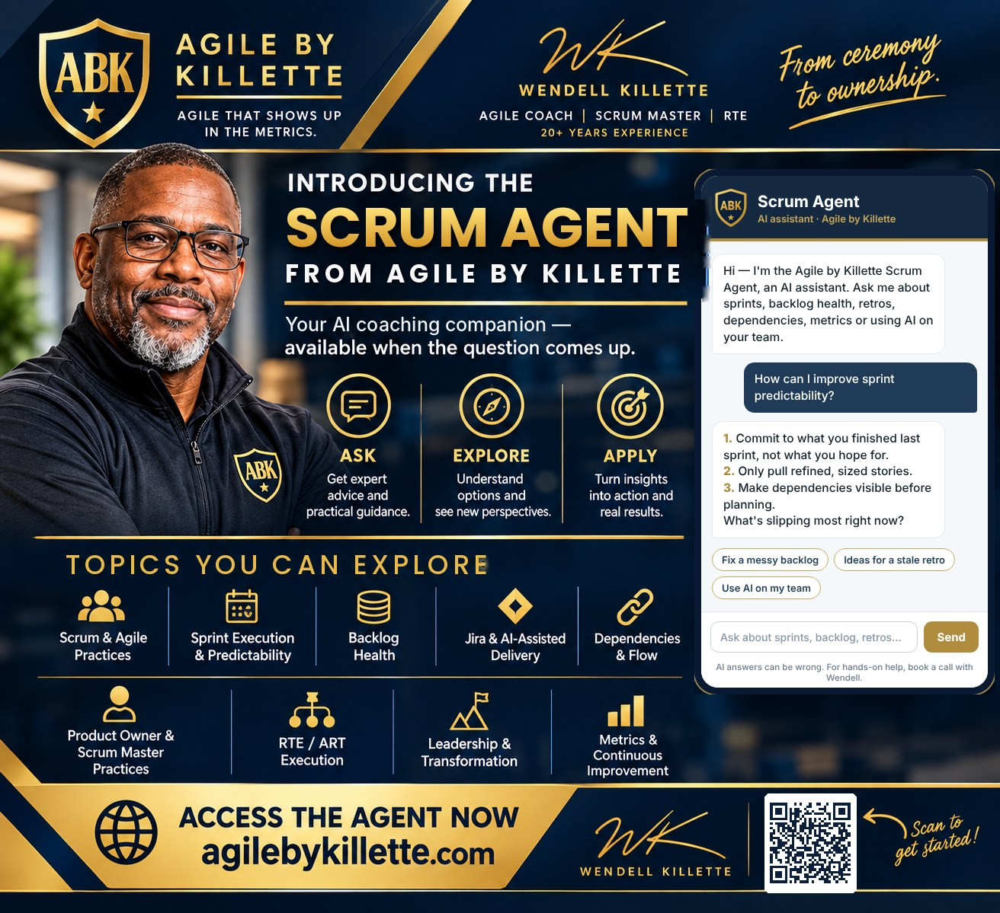
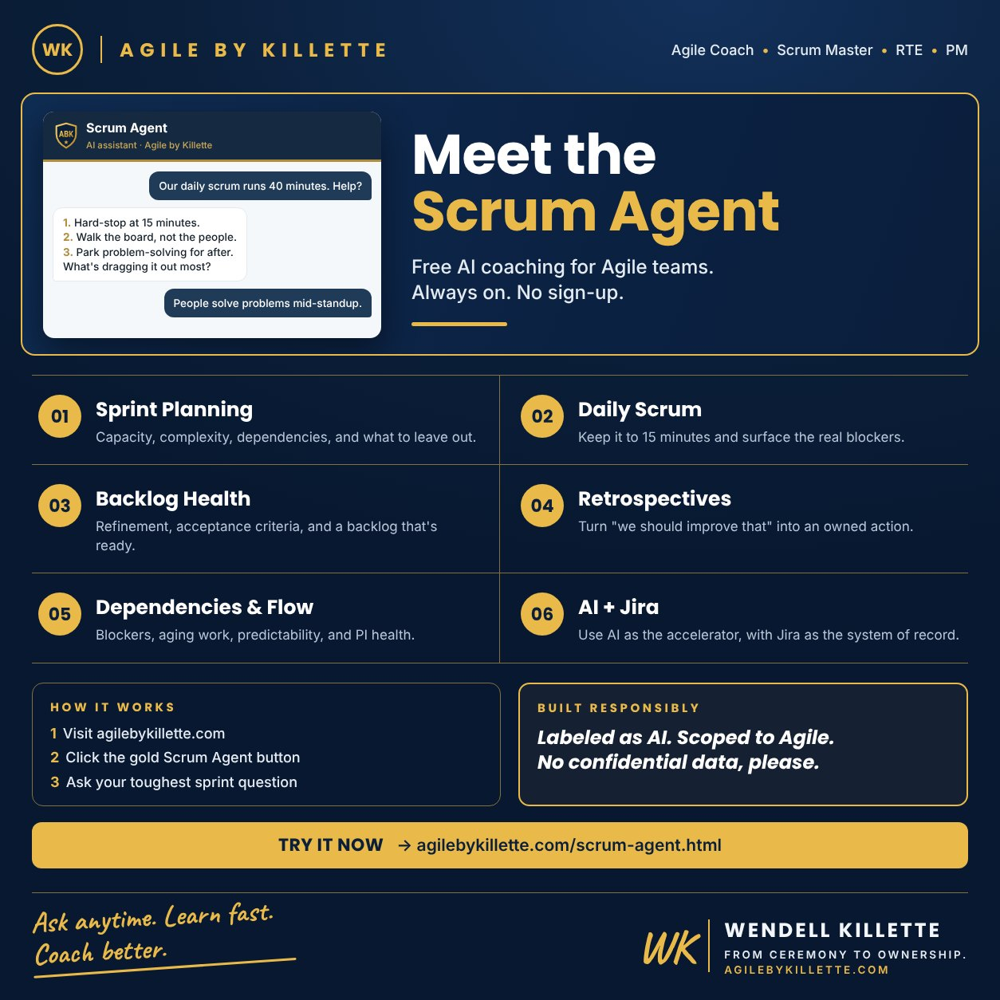

It answers the way I coach: direct, practical, two to four things you can do this sprint — and it points you to the right playbook on this site when there’s more to read.

I advise on AI governance, so I built the Scrum Agent the way I’d want a client to:
AI answers can be wrong. Treat it as a fast first answer — the coach, the team, and the context decide what actually happens.
Did it nail your question — or miss? I read every note. Send feedback, wrong answers, and questions you’d like it to handle better to wendell@agilebykillette.com.
Stalled transformation, struggling train, or AI rollout that needs governance? Book a conversation with Wendell →